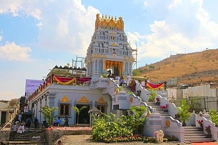

BACK Iskcon Temple

The temple complex is built op 6 acres and it took seven years for construction. It took 48 Crore
temple funded by the Iskcon temple in Camp and devotees. The temple was in augurasted by
Presidenti ISKCON New Vedic Cultural Center (NVCC), Sri Sri Radha Vrindavanchandra temple or
ISKCON Pune is situated in Pune, India. The temple is dedicated to Hindu god Radha Krishna and
was opened in 201: in the city of Pune. The temple complex has two temples- the main Radha
Krishna temple and the Venl The Radhakrishna temple is built in North Indian architecture style
using red stone and marble wh is built in South Indian architecture style (similar to Balaji temple
in Tirumala) using Kota stor classes on Bhagwad Gita and Srimad Bhagavatam.